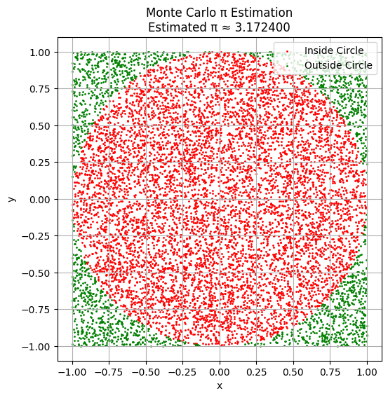
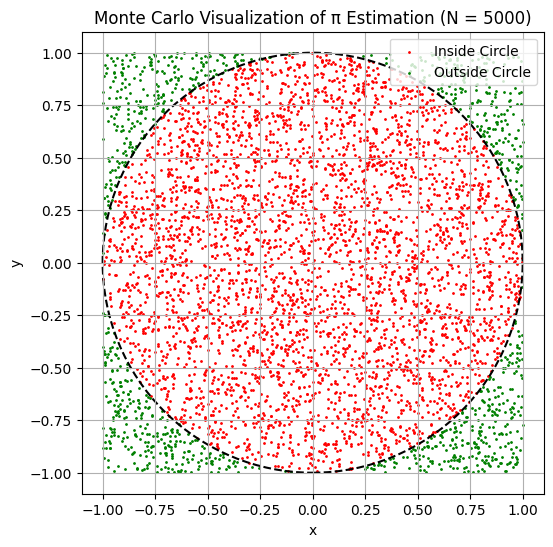
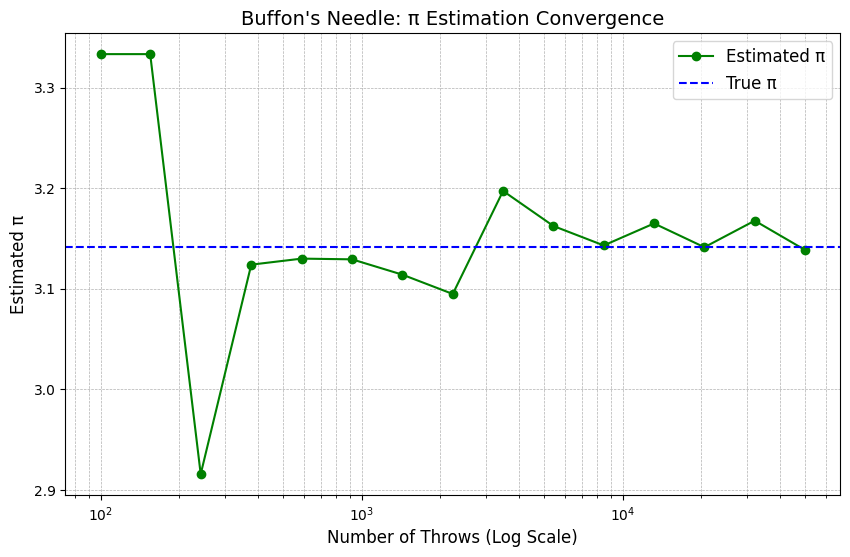
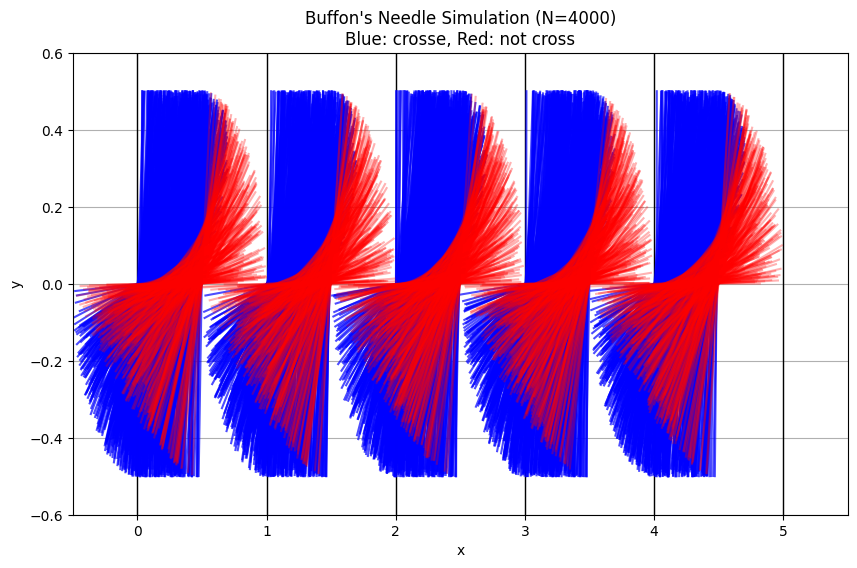

Problem 2
Determining π Using Monte Carlo Techniques
Theoretical Background
To calculate π through randomness, we utilize a setup based on geometric probabilities.
- Construct a square with a side length of 2, centered at the origin. This square spans from \(-1\) to \(1\) along both the x and y axes.
- Enclose a unit circle (radius \(r = 1\)) inside this square, also centered at the origin.
We then generate random points \((x, y)\), where \(x, y \in [-1, 1]\), ensuring they are uniformly spread across the square.
Areas of Interest:
-
Square Area:
\(\(A_{\text{square}} = 2 \times 2 = 4\)\) -
Circle Area:
\(\(A_{\text{circle}} = \pi \times r^2 = \pi \times 1^2 = \pi\)\)
The likelihood that a randomly chosen point lands inside the circle is expressed as the ratio of their areas:
Thus, by generating a large number of random points and tallying those that fall within the circle, we can expect:
Deriving the Estimation Formula
From the theoretical relationship:
We rearrange to estimate π:
This is the key formula for Monte Carlo π estimation.
Determining If a Point Is Within the Circle
For any randomly chosen point \((x, y)\), it is inside the unit circle if:
Hence, for each generated point, calculate \(x^2 + y^2\).
If the result is less than or equal to 1, the point is considered inside the circle.
Steps for Monte Carlo Simulation to Approximate π
The simulation proceeds as follows:
- Generate \(N\) random points \((x, y)\) within the square defined by \([-1, 1] \times [-1, 1]\).
- Count how many of these points lie within the circle using the condition \(x^2 + y^2 \leq 1\).
- Estimate π using the formula:

Visualizing Monte Carlo Points
To better understand the Monte Carlo approach for approximating π:
- Plot all the randomly generated points \((x, y)\) inside the square.
- Mark points inside the circle (\(x^2 + y^2 \leq 1\)) in blue.
- Mark points outside the circle in red.
- Display the unit circle inscribed within a square of side 2, centered at the origin.
This visualization provides an intuitive understanding of how the ratio of areas is linked to π.

Convergence and Accuracy Analysis
Monte Carlo methods rely on statistical principles, improving in precision as the sample size increases. Here’s what we do:
- Conduct simulations with progressively larger numbers of random points \(N\).
- Observe how the approximation of π converges over iterations.
- Study the rate of convergence and computational factors.
Behavior of Convergence
Let \(E(N)\) represent the estimated value of π after generating \(N\) random points. By the Law of Large Numbers, we anticipate:
The standard error (typical deviation from the true value) reduces as:
This implies that reducing the error by a factor of 10 requires increasing the number of points by 100 times.
Considerations for Computation
- Advantages:
- Straightforward and simple to implement.
- Can efficiently utilize parallel computing.
-
Works well even for complex geometric regions.
-
Disadvantages:
- Convergence rate is slow (\(\mathcal{O}(1/\sqrt{N})\)).
- Requires a very large number of samples for high accuracy (e.g., millions of points).
Simulation: Visualizing Convergence
We simulate π approximation for a series of \(N\) values and chart the outcomes to observe convergence behavior.

Estimating π via Buffon’s Needle
Conceptual Framework
Buffon’s Needle Problem

The Buffon’s Needle problem is a classic geometric probability challenge, introduced by French mathematician Georges-Louis Leclerc, Comte de Buffon in the 18th century.
The scenario is:
- A floor is marked with equally spaced parallel lines, separated by a distance \(d\).
- A needle of length \(\ell\) is randomly dropped onto the floor.
- The task is to compute the likelihood of the needle intersecting one of the lines.
Interestingly, this probability involves π, allowing us to estimate its value.
Conditions
- The needle length \(\ell\) must satisfy \(\ell \leq d\).
- The needle is dropped with a random position and orientation.
- Define:
- \(N\) = total needle drops.
- \(C\) = occurrences where the needle crosses a line.
Deriving the Probability
Let:
- \(\theta\) represent the acute angle between the needle and the lines, distributed uniformly within \([0, \frac{\pi}{2}]\).
- \(x\) denote the shortest distance from the center of the needle to the closest line, uniformly in \([0, \frac{d}{2}]\).
The needle crosses a line if half the needle projects beyond the nearest line, i.e.:
The likelihood of this event (over all possible \((x, \theta)\) pairs) is calculated as:
Estimating π Experimentally
If we perform \(N\) trials and record \(C\) crossings, the empirical probability aligns with the theoretical one:
Rearranging to solve for π:
Final Formula for π Approximation
Let:
- \(\ell\) = length of the needle.
- \(d\) = spacing between lines.
- \(N\) = number of needle drops.
- \(C\) = number of crossings observed.
Then:
This technique is a profound example of geometric probability and an alternate Monte Carlo approach to π approximation.
[Google Colab]https://colab.research.google.com/drive/1WMf30zKV3_y9dT4nBBhb_v9ZlXLugmco?usp=sharing)